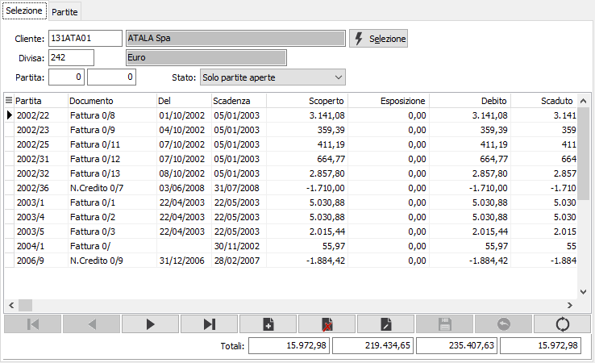
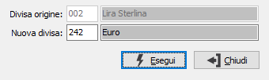
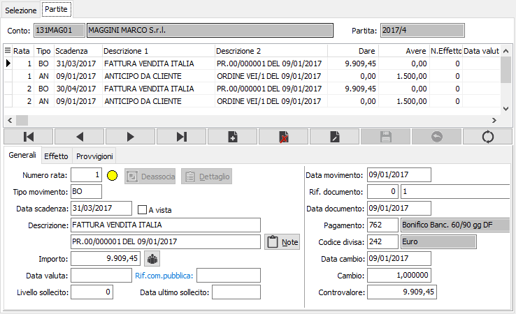
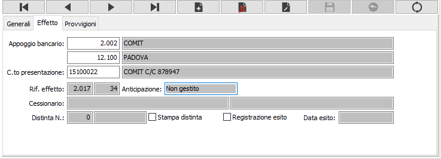
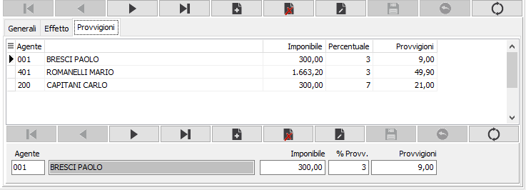

Manutenzione scadenze
Il programma consente di effettuare variazioni alle partite, o meglio alle scadenze, dei clienti.
Poiché le scadenze sono strettamente connesse alla contabilità, è possibile modificare solo elementi che non hanno rilevanza contabile: date di scadenza, modalità di pagamento, importi delle singole rate purché il loro totale corrisponda al totale del documento presente in contabilità, accorpamento totale o parziale di più documenti sotto una sola partita. Se si dovesse invece modificare anche l’importo complessivo del documento (partita), si dovrà provvedere in variazione tramite il programma di Gestione Prima Nota.
Accedendo al programma, appare la seguente finestra video di selezione partite, che consente, una volta inseriti i parametri di selezione (codice cliente; divisa; stato delle partite da esaminare) di visualizzare le partite congruenti con i parametri forniti.
Una volta visualizzate le partite (il cui importo, appunto, non può essere modificato se non tramite il programma di Gestione prima nota perché collegato all’importo presente in contabilità, è possibile selezionarle singolarmente per visualizzare le relative scadenze che, invece, possono essere modificate a condizione che la somma delle scadenze modificate di una singola partita corrisponda all’importo totale della partita stessa visualizzata nella finestra video di selezione.
Finestra video Selezione partite

CLIENTE: codice del cliente, presente nella rispettiva Anagrafica, di cui si intende visualizzare le partite. Sul campo è attiva la funzione di ricerca F9.
CODICE DIVISA: codice della divisa, presente in Tabella Divise, di cui si intende visualizzare le partite. Viene proposta automaticamente la divisa memorizzata sull' anagrafica del cliente, modificabile dall’utente nel caso in cui il cliente abbia emesso documenti in più divise diverse. Sul campo è attiva la funzione di ricerca F9.
PARTITA: due campi per indicare l’anno e il numero della partita che si vuole selezionare, supposto che l’utente conosca tali informazioni. Confermando a vuoto, verranno comunque visualizzate tutte le partite coerenti con i parametri inseriti.
STATO: combo box per selezionare lo stato delle partite da visualizzare. Valori ammessi: Solo partite aperte; Partite aperte e partite esposte; Anche le partite chiuse.
Inseriti i parametri, occorre confermarli tramite pressione del bottone Seleziona: vengono quindi visualizzate le partite coerenti con i parametri inseriti.
È quindi possibile operare per:
accorpare due o più partite
scorporare partite precedentemente accorpate
manutenere le scadenze di una partita
inserire una nuova partita: svincolata dalla registrazione contabile e solo nel caso di quadratura non obbligatoria fra partite e scadenze.
Convertire la partita in un'altra divisa.
Manutenzione delle scadenze di una partita
Dopo aver selezionato tramite i tasti freccia giù o freccia su la partita da manutenere, che deve risultare evidenziata nella griglia delle partite, cliccando due volte sul rigo di tale partita o premere il tasto F11, si apre la finestra video delle scadenze, che visualizza tutti i dettagli di scadenza di tale partita. Premendo il tasto F12 è possibile effettuare la conversione della partita in un'altra divisa.

Si apre la finestra a lato nella quale è possibile indicare la nuova divisa nella quale convertire la partita. La pressione del pulsante Esegui effettua la conversione e mostra il dettaglio della partita già convertito nella nuova divisa. Per mantenere la partita nella nuova divisa sarà necessario premere il pulsante Salva nella toolbar oppure il tasto F10.La finestra video scadenze si articola su tre sezioni: nella sezione superiore compaiono gli estremi del cliente e il numero di partita; nella sezione centrale è visualizzata la griglia dei dettagli (rate) in cui è suddivisa la partita stessa e nella sezione inferiore sono disponibili i pannelli di input. I pannelli di input sono tre: generali, Effetto e Provvigioni, ciascuno individuato da una apposita linguetta.
Registrazione manuale insoluti
Per gli utenti che dispongono del modulo Vendite ed effetti e che non dispongono o non utilizzano il modulo di Contabilità / Partite è possibile registrare manualmente gli insoluti.
Per effettuare tale tipo di registrazione è sufficiente ricercare la partita su cui si intende registrare l’insoluto, posizionarsi sul rigo dell’effetto e premere il tasto F11 (duplicazione rigo): il nuovo rigo generato riporta lo stesso tipo movimento del rigo originale; assegnando il tipo movimento relativo all’insoluto (tipicamente IN) verrà richiesto se si intende registrare un insoluto manualmente; la risposta affermativa a tale richiesta determina l’impostazione dello stato di insoluto sulla rata in esame.
Finestra video Scadenze e sezione video Generali
All’ingresso nella finestra video, nella griglia risulta selezionato il primo dettaglio scadenza della partita e contemporaneamente il cursore è posizionato sul campo Numero rata del pannello di input, che visualizza analiticamente le informazioni contenute nel primo dettaglio scadenze.
Tramite i tasti freccia giù e freccia su è possibile scorrere i vari righi di dettaglio scadenze, e contestualmente all’evidenziazione del rigo attivo nella griglia, i suoi dati vengono riportati nel pannello di input.

Possono essere modificati solo i righi di tipo RD (rimessa diretta), RB (ricevuta bancaria), TR (Tratta), CE (Cessione), BO (bonifico bancario), AT (assegno di traenza) di ciascuna rata, a condizione che non esistano altri righi di dettaglio scadenza per la stessa rata: ovviamente non avrebbe senso modificare la condizione di pagamento o l’importo di una rata se la rata stessa fosse già stata pagata. In ogni caso è possibile modificare solo le informazioni contenute nella parte sinistra del pannello di input. I righi scadenze di tipo NC (nota di credito) e AN (anticipo) possono invece essere “associati” o “separati”.
Le modifiche devono essere congruenti: è possibile modificare senza particolari remore il tipo movimento (trasformando una RB in RD (a condizione che la RB non abbia già generato un effetto i cui estremi sono contenuti nella linguetta Effetto) e viceversa. È possibile modificare la data di scadenza e la eventuale data di valuta. È anche possibile modificare l’importo, ma in questo caso occorre che la differenza venga compensata su un ulteriore scadenza della stessa partita, perché la somma delle singole rate deve comunque corrispondere al totale della partita.
È anche possibile eliminare un rigo di scadenza (sempre e solo di tipo RD, RB, TR, CE) quando, ad esempio, si deve modificare un pagamento precedentemente convenuto in tre rate e successivamente concordato in due, ma l’operazione è comunque praticabile solo se le singole rate non sono state ulteriormente “trattate” e comunque garantendo la congruenza degli importi complessivi. In situazioni di questo genere è preferibile agire in variazione di prima nota.
La linguetta Generali contiene solo una parte delle informazioni relative ad un dettaglio partita. Ulteriori informazioni sono contenute nelle linguetta Effetto e Provvigioni (da cui vengono successivamente generati gli effetti ed i conteggi delle provvigioni agenti), e in caso di modifica di importi o cancellazione di rate occorre intervenire coerentemente anche su tali linguetta.
Se è attiva la gestione della Normativa Antimafia è presente il campo "Rif. commessa pubblica" che contiene la commessa pubblica assegnata alla scadenza.
Linguetta Effetto

Linguetta Provvigioni
